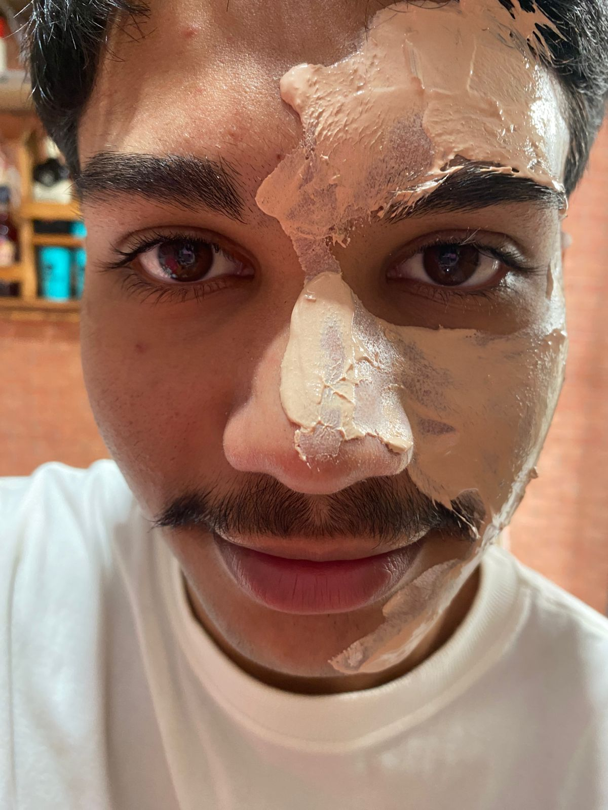
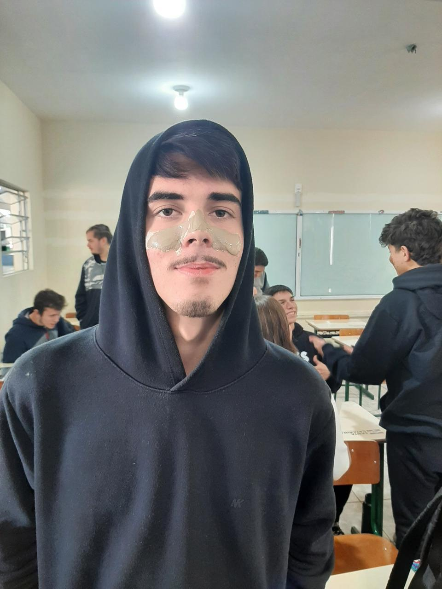

“Ver o interesse e a participação dos alunos foi incrível. Nosso objetivo sempre foi mostrar que é possível
cuidar da pele com ingredientes simples, naturais e acessíveis. Ensinar cada etapa, desde o reconhecimento
dos ingredientes até a produção final dos cosméticos, foi gratificante.
Sentimos que, mais do que ensinar uma receita, plantamos sementes de consciência sobre autocuidado,
sustentabilidade e valorização do que vem da natureza. Ver os alunos colocando a mão na massa, se divertindo
e aprendendo de verdade nos mostrou que esse projeto tem um impacto real — e é só o começo!”
Caroline e Jamilli

"Cleylton, estudante da EEB São João Bosco
Gostei da experiência de poder ajudar no trabalho e da ideia que elas tiveram em transformar algo que está
no do dia a dia das pessoas em algo sustentável"
Cleylton
"Bianca, estudante do IFC-Campus Ibirama
Os cosméticos são realmente muito bons e são uma nova forma de aprender sobre sustentabilidade, além que as
pessoas podem aprender a fazerem em casa, o que torna bem mais fácil"
Bianca
"Arthur, estudante da EEB São João Bosco
O projeto delas foi bem interessante e pensado com muito carinho pelas alunas e pela professora, realmente
elas se esforçaram muito nesse projeto, ainda mais por ser o último ano na escola"
Arthur

"Gostei muito do body splash de tangerina com chá concentrado da folha e álcool de cereais. O cheiro é
refrescante e natural, ótimo para usar no dia a dia. Além disso, os ingredientes são simples e baratos,
então é um produto que vale muito a pena, porque cuida da pele sem pesar no bolso."
Pablo
Vitor: “Eu achei muito legal aprender a fazer meus próprios cosméticos. Desde conhecer os ingredientes
naturais até preparar o esfoliante e a máscara, tudo foi uma experiência nova e divertida.”
Ricardo: “É verdade! A gente entendeu como tudo funciona, desde o plantio até o produto final. Foi incrível
poder criar algo com as próprias mãos e ainda aprender sobre sustentabilidade.”
Vitor: “Além disso, os produtos são simples e naturais, o que faz a gente querer cuidar da pele de um jeito
mais saudável e consciente.”
Ricardo: “Com certeza, foi um projeto que valeu muito a pena. Aprender na prática é muito mais legal!”
Vitor e Ricardo